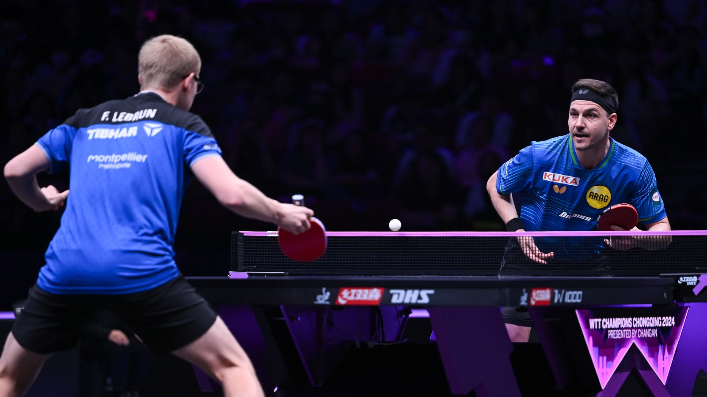

Hakkımda
Merhaba, ben Ebubekir Doğan. 2004 yılında Kahramanmaraş’ta doğdum. İlköğretimi burada, ortaöğretimi Kahramanmaraş ve Erzincan’da tamamladım. Liseyi de yine Kahramanmaraş'ta bitirdim ve şu anda Sakarya Üniversitesi Bilgisayar Mühendisliği 1. sınıf öğrencisiyim. Kayseri’de ikamet ediyorum.
Hobilerim
- Programlama
- Web tasarımıyla uğraşmak
- Müzik dinlemek
- Dizi izlemek
Sevdiğim Spor ve Etkinlikler
Futbol maçlarını izlemeyi severim. Milli maçlar ve Şampiyonlar Ligi karşılaşmalarını kaçırmam. Tutkulu bir Galatasaray taraftarıyım. Lise yıllarımda masa tenisi oynuyordum, şu anda izlemeyi sürdürüyorum.

